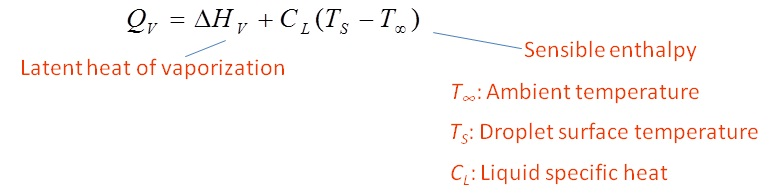

Factors affecting the shape of the flame front:
(a) Zero gravity : spherical flame front (no buoyancy)
(b) Normal gravity : elongated (due to natural convection)
(c) Forced convection condition : fame aligned with flow
Energy required to vaporize the liquid fuel (QV):
